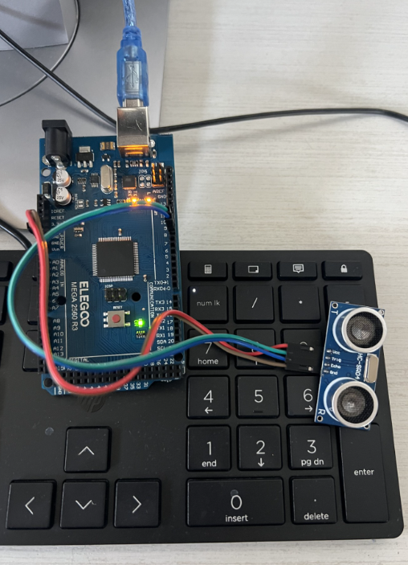
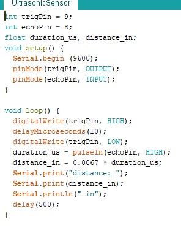
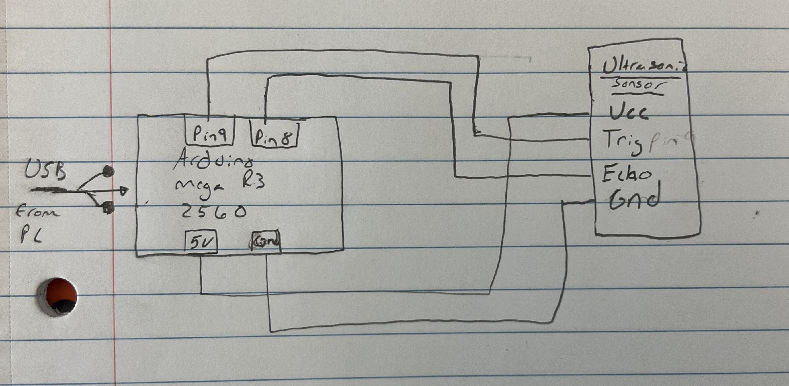
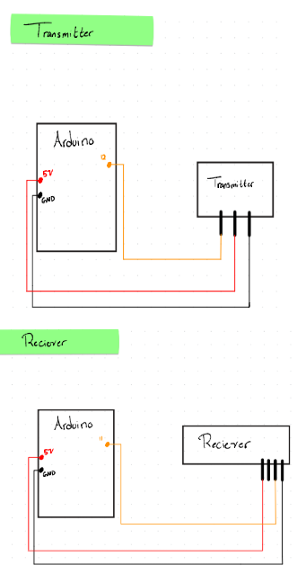
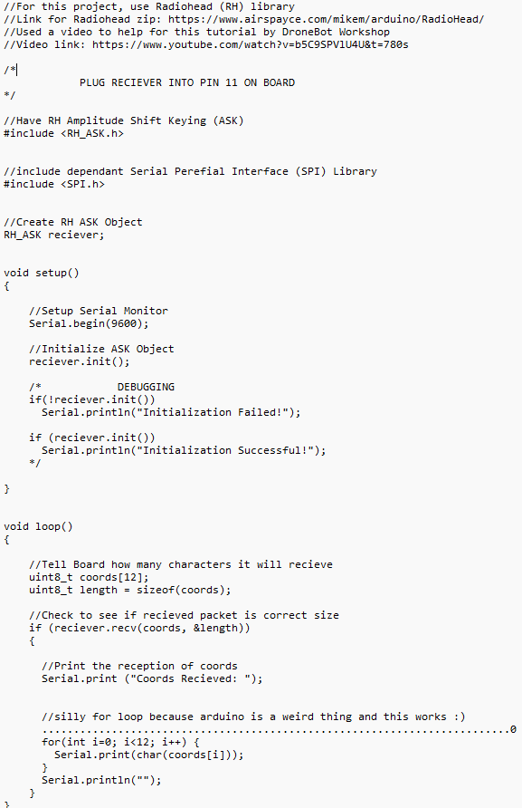
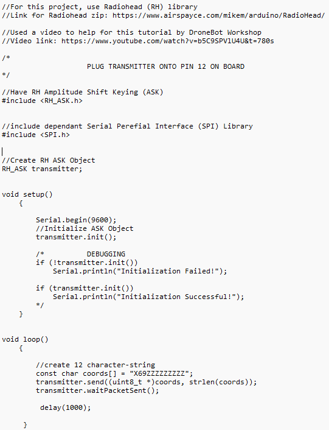

Arduino Projects/Other Projects
Learning exercises and preliminary experiments.
(Arduino rover module assignment 1)
(Paragraph 1)
(Paragraph 2)
(Arduino rover module assignment 2 ultrasonic)
Tutorial Introduction
This tutorial explains how to connect and use an ultrasonic distance sensor (such as the HC-SR04) with an Arduino. By following and completing this tutorial, you will learn how the ultrasonic sensor works, how to wire it correctly, and how to write an Arduino sketch to measure distance. The final result allows distance measurements to be displayed in the Arduino Serial Monitor.
Use in an Autonomous Rover Mission
An ultrasonic sensor is commonly used on autonomous rovers for obstacle detection and avoidance. By continuously measuring the distance to objects in front of the rover, the Arduino can determine when the rover should stop, turn, or change direction. This helps the rover navigate its environment safely and autonomously.
Required Electronics / Hardware
- Arduino Uno (or compatible Arduino board)
- Ultrasonic sensor (HC-SR04 or similar)
- Breadboard
- Jumper wires
- USB cable for programming and power
Required Libraries
No external libraries are required for this project. The sketch uses built-in Arduino functions
such as pulseIn(), digitalWrite(), and Serial.
Wiring Diagram Description
The ultrasonic sensor is connected to the Arduino as follows:
- VCC pin connected to Arduino 5V
- GND pin connected to Arduino GND
- Trig pin connected to Arduino digital pin 9
- Echo pin connected to Arduino digital pin 8
A wiring diagram can be created using tools such as Wokwi or Fritzing.



(Paragraph 2 — write reflections, challenges, or results here.)
(Arduino rover module assignment 3 - RF)
(Paragraph 1)
(Paragraph 2)



(Other Project #4)
(Paragraph 1)
(Paragraph 2)